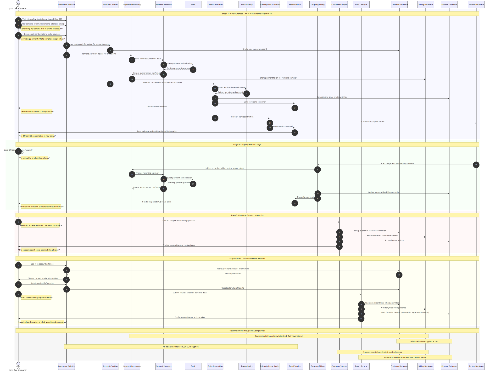

Commerce Financial Platforms (CFP) - User Journey Perspective
This diagram illustrates the typical user journey and personal data flow from a customer's perspective when purchasing a Microsoft product online.
flowchart TB
%% Define styles
classDef external fill:#f9f,stroke:#333,stroke-width:2px
classDef process fill:#bbf,stroke:#333,stroke-width:1px
classDef datastore fill:#dfd,stroke:#333,stroke-width:1px,shape:cylinder
classDef sensitiveData fill:#fcb,stroke:#f66,stroke-width:2px
classDef encrypted fill:#cfc,stroke:#393,stroke-width:1px
classDef retention fill:#fdd,stroke:#933,stroke-width:2px
%% External entities
Customer(["Customer (John Doe)"]):::external
PaymentProcessor(["Payment Processor"]):::external
Bank(["Customer's Bank"]):::external
TaxAuthority(["Tax Authority"]):::external
EmailService(["Email Delivery Service"]):::external
%% Internal processes
CommerceWebsite["Microsoft Commerce Website"]:::process
AccountCreation["Account Creation Process"]:::process
PaymentProcessing["Payment Processing"]:::sensitiveData
OrderGeneration["Order & Invoice Generation"]:::process
SubscriptionActivation["Service Activation"]:::process
OngoingBilling["Periodic Billing"]:::process
CustomerSupport["Customer Support"]:::process
DataLifecycle["Data Retention & Deletion"]:::retention
%% Data stores
CustomerDB[("Customer Database - Names, Contact details, Account IDs")]:::datastore
BillingDB[("Billing Database - Transaction records, Payment tokens (not full CC#), Billing addresses")]:::datastore
FinanceDB[("Financial Records - Invoices, Receipts, Tax calculations, Usage data")]:::datastore
ServiceDB[("Service Database - Subscription status, Usage metrics")]:::datastore
subgraph MicrosoftBoundary["Microsoft Internal Systems"]
CommerceWebsite
AccountCreation
PaymentProcessing
OrderGeneration
SubscriptionActivation
OngoingBilling
CustomerSupport
DataLifecycle
CustomerDB
BillingDB
FinanceDB
ServiceDB
end
%% Data flows - Initial purchase
Customer -->|"Personal info (name, address, email) via TLS/SSL"| CommerceWebsite
Customer -->|"Credit card details (CC#, exp date) via TLS/SSL"| CommerceWebsite
CommerceWebsite -->|"Create customer account"| AccountCreation
AccountCreation -->|"Store customer profile"| CustomerDB
CommerceWebsite -->|"Process payment (secured/encrypted)"| PaymentProcessing
PaymentProcessing -->|"Tokenized payment data (not full CC#)"| PaymentProcessor
PaymentProcessor -->|"Process payment with bank"| Bank
Bank -->|"Payment confirmation"| PaymentProcessor
PaymentProcessor -->|"Payment approval"| PaymentProcessing
PaymentProcessing -->|"Store payment token & transaction"| BillingDB
AccountCreation -->|"Customer location for tax calculation"| OrderGeneration
OrderGeneration -->|"Calculate applicable taxes"| TaxAuthority
OrderGeneration -->|"Generate invoice & store record"| FinanceDB
OrderGeneration -->|"Send invoice to customer"| EmailService
EmailService -->|"Email invoice to customer"| Customer
%% Data flows - Subsequent service usage
OrderGeneration -->|"Activate subscription"| SubscriptionActivation
SubscriptionActivation -->|"Create service record"| ServiceDB
SubscriptionActivation -->|"Welcome email"| EmailService
ServiceDB -->|"Track usage & renewal dates"| OngoingBilling
OngoingBilling -->|"Periodic billing (using stored token)"| PaymentProcessing
OngoingBilling -->|"Update finance records"| FinanceDB
%% Data flows - Support and data lifecycle
Customer -->|"Billing or account inquiry"| CustomerSupport
CustomerSupport -->|"Access customer records (as needed)"| CustomerDB
CustomerSupport -->|"Access billing records (as needed)"| BillingDB
Customer -->|"Request data deletion"| DataLifecycle
DataLifecycle -->|"Remove personal data (where legally permitted)"| CustomerDB
DataLifecycle -->|"Pseudonymize data (for legal retention)"| BillingDB
DataLifecycle -->|"Retain financial records (required by law)"| FinanceDB
%% Annotations for key data protection elements
CustomerDB -.->|"Secured by encryption & access controls"| CustomerDB
BillingDB -.->|"PCI compliant, No full CC# stored"| BillingDB
FinanceDB -.->|"Retained for 7+ years for tax/legal purposes"| FinanceDB
Customer -.->|"Can access & correct billing info via account"| Customer
DataLifecycle -.->|"Data deleted or anonymized after retention period"| DataLifecycle
#
User Experience Sequence
This sequence diagram presents the chronological flow of a typical customer's experience when purchasing and using a Microsoft product, highlighting both the visible and behind-the-scenes data processing activities.

#
Legend
This user journey data flow diagram illustrates:
1. User Actions: Key steps the user takes when purchasing and using Microsoft products
2. Data Collection Points: Where and how personal data enters Microsoft's systems
3. Data Processing: How personal data is processed for legitimate business purposes
4. Data Storage: Where personal data is stored and for how long
5. Data Protection: Security and privacy measures applied to personal data
6. Data Sharing: When and why personal data might be shared with third parties
7. Data Lifecycle: How personal data is managed throughout its lifecycle
#
Customer-Centric Processing Details
From the user's perspective, personal data processing in the Commerce Financial Platforms includes:
1. Account Creation: Customer provides information to create a profile for purchasing
2. Payment Processing: Credit card details are securely processed and tokenized
3. Tax Calculation: Address information determines applicable taxes
4. Service Activation: Purchase triggers activation of the subscription
5. Recurring Billing: Stored payment token used for subscription renewal (no re-entry of card)
6. Customer Support: Authorized agents can access necessary account information
7. User Control: Customer can view, update, and request deletion of personal information
#
Privacy Rights Implementation
The system supports customer privacy rights through:
1. Transparency: Clear communication about what data is collected and how it's used
2. Access: Customer can view their stored personal information through account settings
3. Correction: Self-service options to update contact and billing information
4. Deletion: Process to delete personal data with clear explanation of legal retention exceptions
5. Security: Multi-layered protection including encryption, access controls, and tokenization
6. Purpose Limitation: Data used only for billing, service delivery, and legal requirements
#
Key Data Protection Elements:
- Security Measures: All data is transmitted using TLS/SSL encryption
- Payment Protection: Full credit card numbers are not stored; tokenization is used instead
- Access Controls: Only authorized personnel can access personal data on a need-to-know basis
- Retention Policies: Clear retention periods based on legal requirements
- User Rights: Customers can access, correct, and request deletion of their data
- Minimal Sharing: Personal data is only shared when necessary to complete transactions or comply with legal obligations
#
Plain-Language User Journey:
1. Providing Information: The customer provides personal details and payment information when making a purchase
2. Account Creation: Microsoft creates a billing account for the customer
3. Payment Processing: Payment details are securely processed through a payment service
4. Order Record: Microsoft generates and stores an order record and invoice
5. Service Activation: The purchased service is activated for the customer
6. Ongoing Service: Microsoft periodically uses the data for billing and service provision
7. Customer Support: If needed, support agents can access relevant customer information
8. Data Management: Personal data is protected throughout its lifecycle and eventually deleted or anonymized